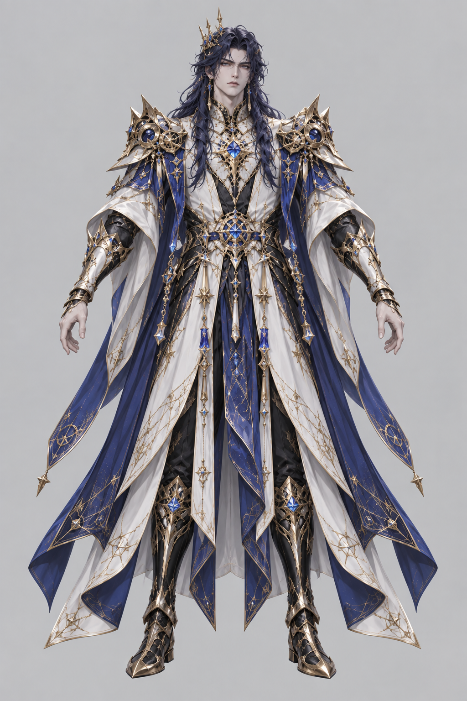

<!doctype html><html lang="zh-CN"><meta charset="utf-8"><meta name="viewport" content="width=device-width,initial-scale=1"><title>苍曜 · 3D 模型试作</title><style>body{margin:0;background:#0d1420;color:#e5ddcd;font:14px/1.7 system-ui}header{padding:18px 28px;border-bottom:1px solid #d5bd7d30}h1{margin:0;font-size:25px}p{margin:5px 0;color:#aaaebc}main{display:grid;grid-template-columns:1fr 300px;height:calc(100vh - 155px);min-height:450px}#view{position:relative;touch-action:none;min-width:0;overflow:hidden}canvas{display:block;width:100%;height:100%}aside{padding:20px;background:#141d2b}img{width:100%;max-height:65vh;object-fit:contain}nav{padding:10px 28px;display:flex;gap:10px;align-items:center;flex-wrap:wrap}button,a{background:#253247;border:1px solid #bca47455;color:#e5ddcd;padding:6px 14px;border-radius:4px;cursor:pointer}#status{font-size:12px;color:#bfc4ce}@media(max-width:700px){main{grid-template-columns:1fr 110px}aside{padding:8px}header{padding:12px}h1{font-size:20px}}</style><header><h1>苍曜 · 星龙天君</h1><p>3D 模型试作 · 拖动旋转 / 滚轮缩放 · 已接入战斗 · 本地骨骼动作预览</p></header><main><div id="view"></div><aside>建模参考<p>蓝金盔甲 / 长发 / 分层战袍<br>武器与法术特效后续独立配置</p></aside></main><nav><button id="rotate">暂停旋转</button><button id="front">正面</button><button id="back">背面</button><button id="wire">查看线框</button><button id="attack">攻击</button><button id="hit">受击</button><button id="death">倒地</button><button id="idle">待机</button><label>动作进度 <input id="pose" aria-label="动作进度" type="range" min="0" max="100" value="0"></label><span id="status">正在加载模型…</span></nav><script type="importmap">{"imports":{"three":"../vendor/three/three.module.js"}}</script><script type="module">
import * as T from 'three';import{rigCaelum}from '../caelum-rig.js';import{GLTFLoader}from '../vendor/three/addons/loaders/GLTFLoader.js';
const host=document.querySelector('#view'),status=document.querySelector('#status'),scene=new T.Scene();scene.background=new T.Color('#111c2b');const camera=new T.PerspectiveCamera(34,1,.01,100);let distance=4.7;camera.position.set(0,1.1,distance);camera.lookAt(0,1,0);const renderer=new T.WebGLRenderer({antialias:true});renderer.setPixelRatio(Math.min(devicePixelRatio,2));renderer.outputColorSpace=T.SRGBColorSpace;renderer.toneMapping=T.ACESFilmicToneMapping;renderer.toneMappingExposure=1.3;host.append(renderer.domElement);scene.add(new T.HemisphereLight(0xd9eaff,0x66523d,2.5));for(const [x,y,z,color,power]of [[3,5,4,0xffe4ba,4],[-3,3,2,0xbcd8ff,3],[0,3,-3,0xa1bdff,4]]){const l=new T.DirectionalLight(color,power);l.position.set(x,y,z);scene.add(l)}const group=new T.Group();scene.add(group);const floor=new T.Mesh(new T.CylinderGeometry(1.1,1.15,.06,64),new T.MeshStandardMaterial({color:0x263649,metalness:.4,roughness:.65}));floor.position.y=-.045;scene.add(floor);let auto=true,wire=false,lastX=null,mixer,clips,action;let poseTime=null;document.querySelector('#pose').oninput=e=>{if(!mixer)return;play('sword_attack');poseTime=Number(e.target.value)/100*action.getClip().duration;action.time=poseTime;mixer.update(0)};function play(name){if(!mixer)return;poseTime=null;action?.stop();action=mixer.clipAction(clips.find(c=>c.name===name));action.setLoop(name==='idle'?T.LoopRepeat:T.LoopOnce,name==='idle'?Infinity:1);action.clampWhenFinished=true;action.reset().play()}for(const [id,name]of [['attack','sword_attack'],['hit','receivehit'],['death','death'],['idle','idle']])document.getElementById(id).onclick=()=>play(name);
new ResizeObserver(()=>{const w=host.clientWidth,h=host.clientHeight;renderer.setSize(w,h,false);camera.aspect=w/h;camera.updateProjectionMatrix()}).observe(host);
new GLTFLoader().load('../assets/models/caelum-battle.glb',asset=>{const g=rigCaelum(asset);mixer=new T.AnimationMixer(g.scene);clips=g.animations;play('idle');const box=new T.Box3().setFromObject(g.scene),size=box.getSize(new T.Vector3()),center=box.getCenter(new T.Vector3()),scale=2/size.y;g.scene.scale.setScalar(scale);g.scene.position.set(-center.x*scale,-box.min.y*scale,-center.z*scale);group.add(g.scene);let faces=0;g.scene.traverse(o=>{if(o.isMesh){faces+=(o.geometry.index?.count||o.geometry.attributes.position.count)/3}});status.textContent=`模型已加载 · ${Math.round(faces).toLocaleString()} 三角面 · ${g.animations.length} 个动画`;},undefined,()=>{status.textContent='模型尚未就绪，生成完成后刷新此页'});
document.querySelector('#rotate').onclick=e=>{auto=!auto;e.target.textContent=auto?'暂停旋转':'自动旋转'};function face(a){auto=false;group.rotation.y=a;document.querySelector('#rotate').textContent='自动旋转'}document.querySelector('#front').onclick=()=>face(0);document.querySelector('#back').onclick=()=>face(Math.PI);document.querySelector('#wire').onclick=()=>{wire=!wire;group.traverse(o=>{if(o.isMesh)for(const m of Array.isArray(o.material)?o.material:[o.material])m.wireframe=wire})};host.onpointerdown=e=>{lastX=e.clientX;host.setPointerCapture(e.pointerId);face(group.rotation.y)};host.onpointermove=e=>{if(lastX!==null){group.rotation.y+=(e.clientX-lastX)*.01;lastX=e.clientX}};host.onpointerup=host.onpointercancel=()=>lastX=null;host.addEventListener('wheel',e=>{e.preventDefault();distance=T.MathUtils.clamp(distance+e.deltaY*.003,2,8);camera.position.z=distance;camera.lookAt(0,1,0)},{passive:false});const clock=new T.Clock();renderer.setAnimationLoop(()=>{const dt=Math.min(clock.getDelta(),.05);if(poseTime===null)mixer?.update(dt);if(auto)group.rotation.y+=dt*.22;renderer.render(scene,camera)});
</script></html>
